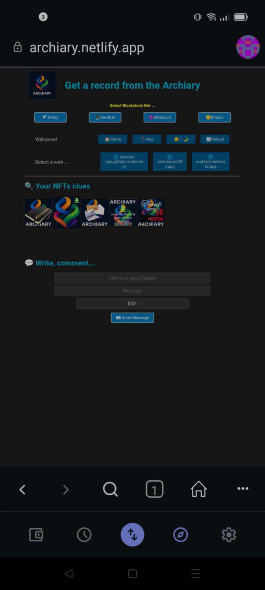
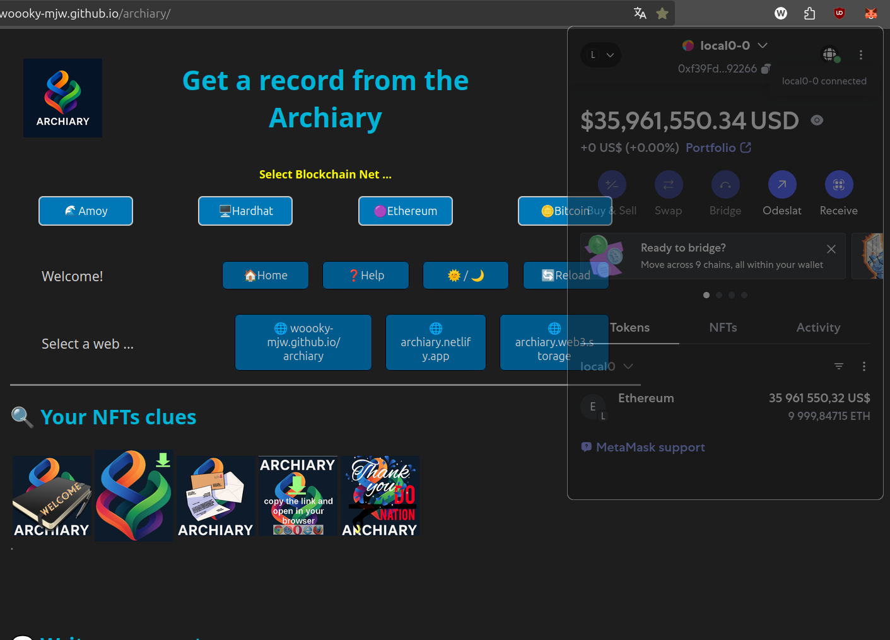
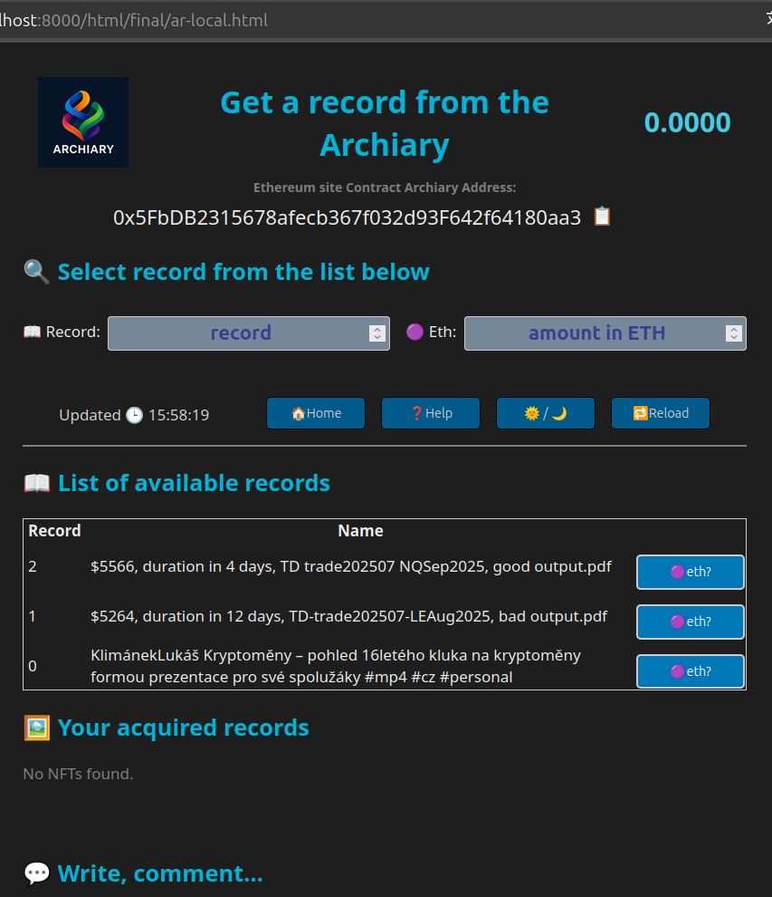
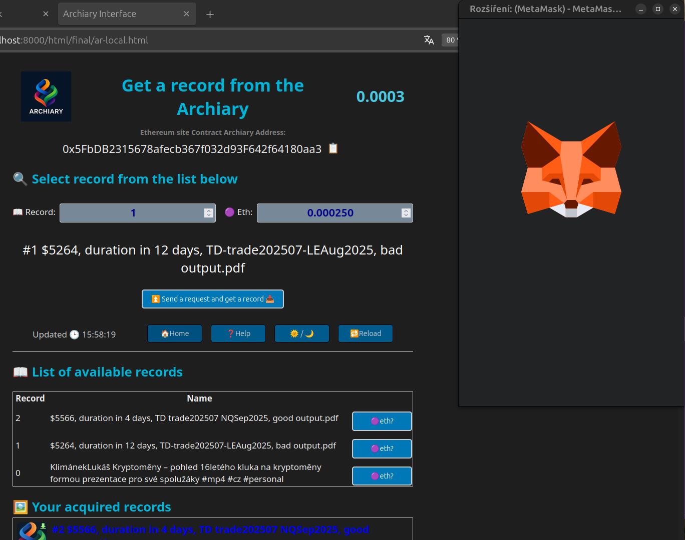
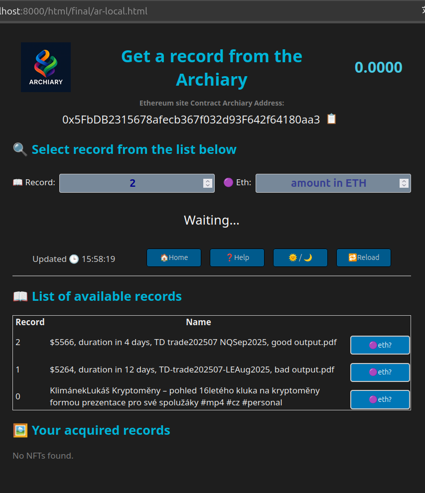
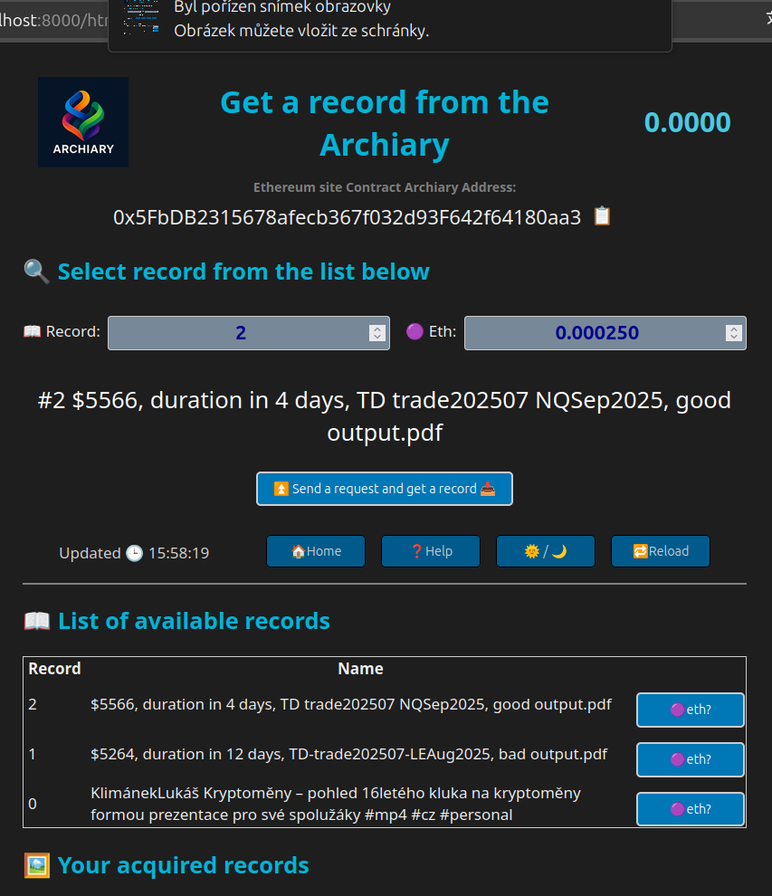
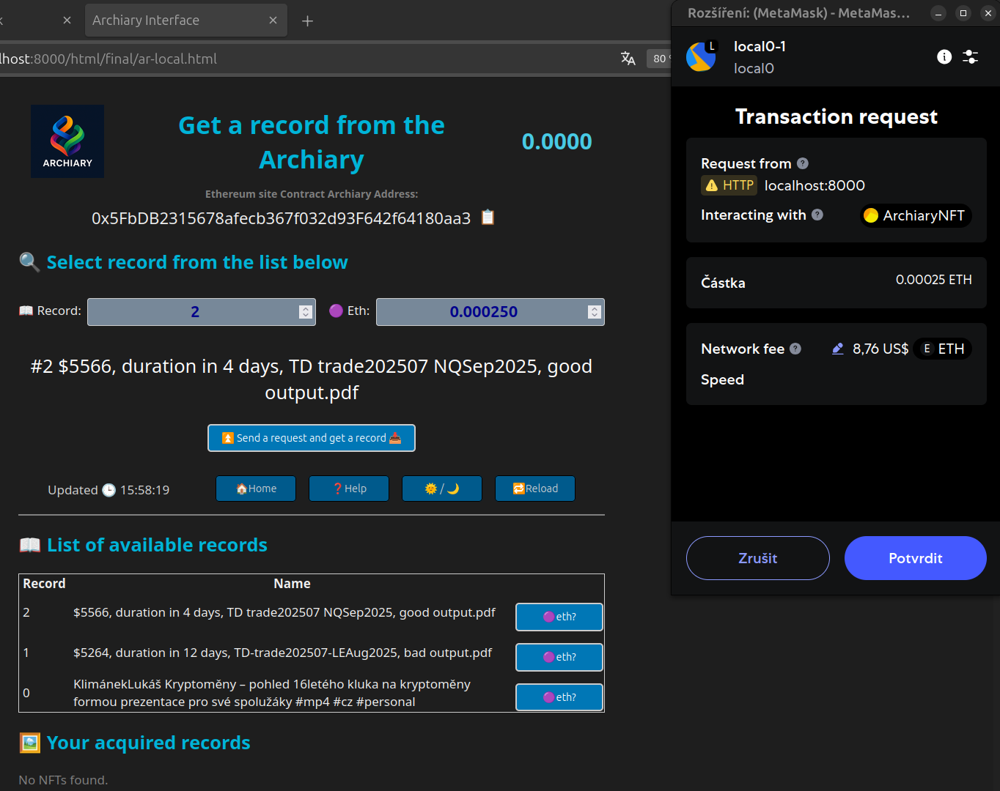
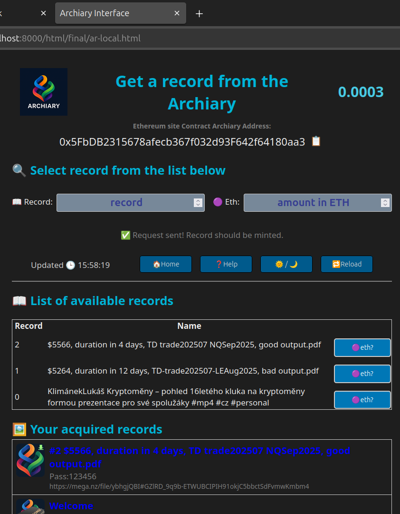
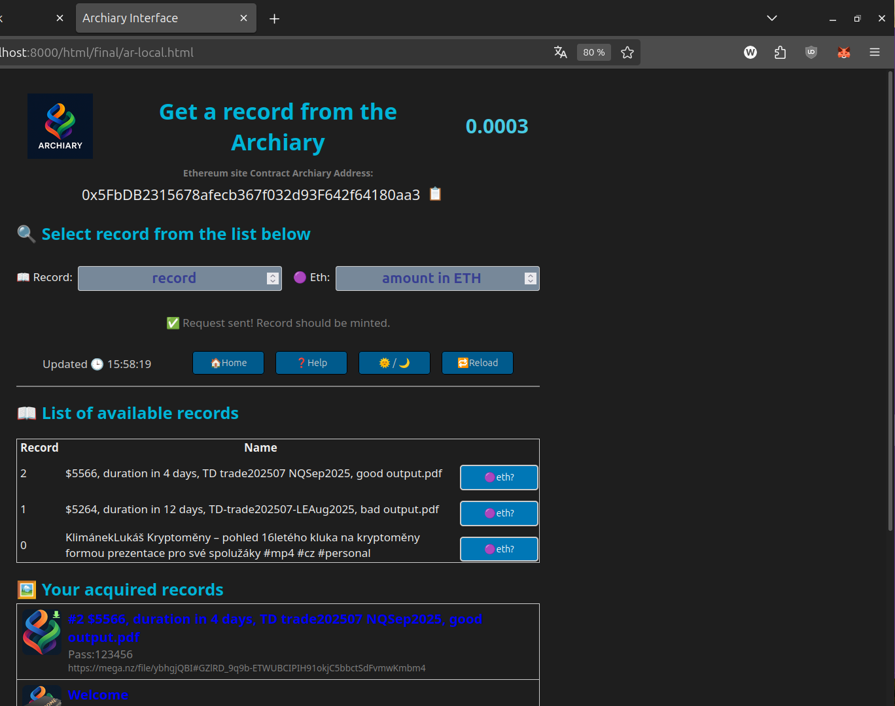

You can get records here according to your liking and taste, for your needs, for teaching, for understanding. 🧠 🤔 💡💰 No document is a recommendation. ❌ Some documents or parts thereof may be protected by copyright law, their use is at your own risk.
Records are stored in various formats: pdf, avi, mp4, png, html, txt, xls, ods, odt. Some records are protected by a password that must be entered when opening. The passwords are included with the retrieved records.
Select the record you are interested in by name from the list. Send ETH to the contract and get a link to it with a password if necessary. You can use the Metamask wallet linked to this website, or open this page directly in your Metamask wallet. You still have access to the records you have obtained.

 v  
 

 
This project is non-profit and all proceeds will be used for charitable purposes. There is a fee for obtaining records to limit frivolous access and irresponsible dissemination. The selected amount is displayed at the top right. Support the charity, even just for the good feeling.
Downloading a recording increases the price of the next download by 10%..